ANYmal · Image goal
WAVE ROVER · 2D pose goal, off-road
Spot · Image + 2D pose goal
Detour Course · Onboard view
Visual navigation policies built on large pretrained models increasingly rely on large cross-embodiment datasets and expressive action-generation mechanisms. In this paper, we ask whether a pretrained Multimodal Large Language Model (MLLM) can be adapted efficiently for robot navigation by rethinking the representation and construction of navigation actions.
We introduce GemNav, a visual navigation policy that represents each robot-local waypoint coordinate as a categorical distribution over discrete metric value bins and soft-decodes it into a continuous coordinate for execution. This probabilistic representation retains likelihood information over alternative coordinate values while providing a compact action space suitable for robot navigation. We further construct training trajectories using metric-distance goal sampling rather than fixed future frame offsets, exposing the policy to varying physical navigation horizons independent of dataset frame rate and robot speed.
GemNav is trained on a single 8.7-hour public SCAND dataset, roughly three orders of magnitude smaller than competing cross-embodiment datasets. Extensive offline and closed-loop experiments show improved out-of-distribution generalization over frame-based sampling and substantially more reliable obstacle navigation than a matched continuous regression head. The same policy transfers without per-platform retraining across unseen environments and three physically distinct robot platforms.
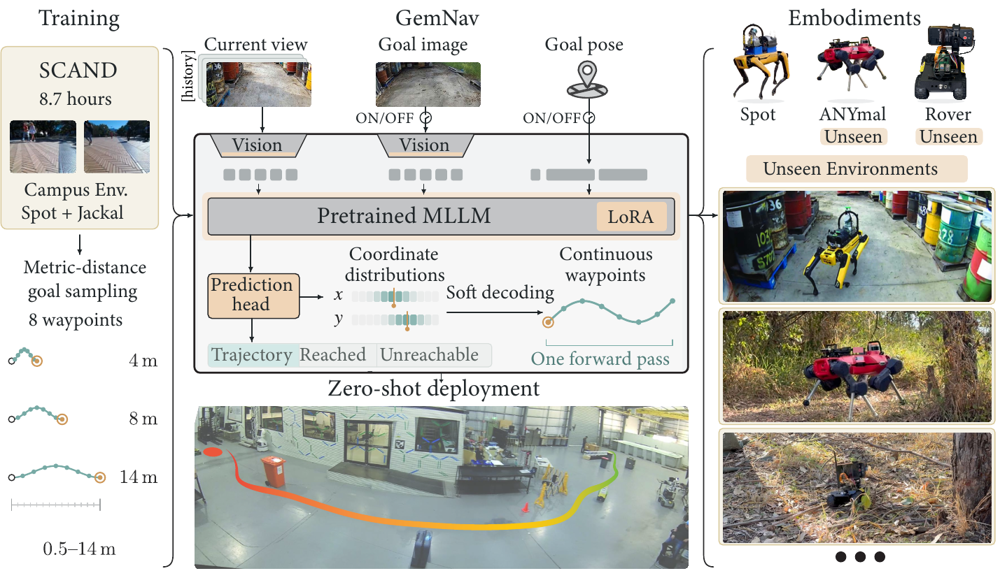
Each waypoint coordinate is a categorical distribution over 64 uniform bins spanning ±15 m. Soft decoding (the expectation over bin centers) gives a continuous coordinate, while the distribution keeps track of alternative paths, such as passing an obstacle on either side.
Training goals are sampled by physical distance (0.5–14 m) rather than a fixed number of future frames, so the policy sees varied navigation horizons regardless of dataset frame rate or robot speed.
A frozen Gemma 4 backbone is adapted with LoRA on both vision and language towers. One forward pass predicts eight waypoints plus a navigation state (trajectory, goal reached, goal unreachable), so the robot knows when to stop.
Every experiment below uses the same SCAND-trained checkpoint, with no per-platform retraining. ANYmal and WAVE ROVER are unseen embodiments.
8.7 h
training data (SCAND only)
3
robot platforms
10/10
image-goal trials reached
0.49 m
final error, Chemical Yard (OmniVLA: 16.54 m)
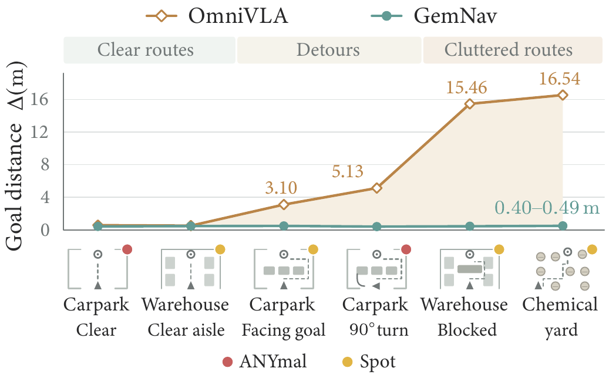
In the obstacle-free Open Approach on Spot, GemNav reaches and stops at the goal in all ten trials (0.31 ± 0.11 m final displacement), compared with OmniVLA's closest approach of 1.45 ± 0.38 m. GNM generally stays at least 3 m away, while ViNT and NoMaD succeed reliably from only one of the two initial headings. On the unseen WAVE ROVER, it reaches the image goal in all five trials (0.64 ± 0.12 m).
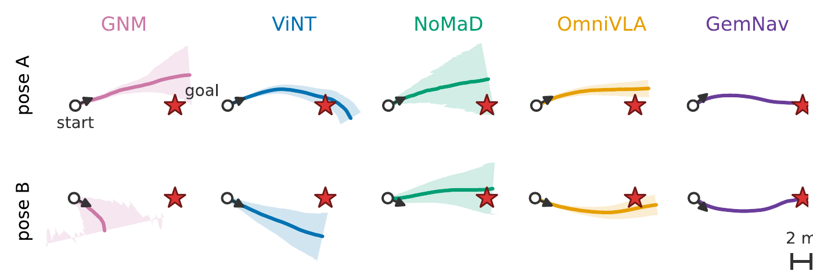
Image-goal navigation on ANYmal, an unseen embodiment
With 2D pose and image+2D pose goals, the gap grows when the robot has to leave the direct line to the goal. In the Warehouse, blocking an otherwise clear aisle barely changes GemNav's error (0.46 → 0.44 m), while OmniVLA's closest approach rises from 0.51 to 15.46 m. In the Chemical Yard, GemNav reaches and stops at the goal in all five trials.
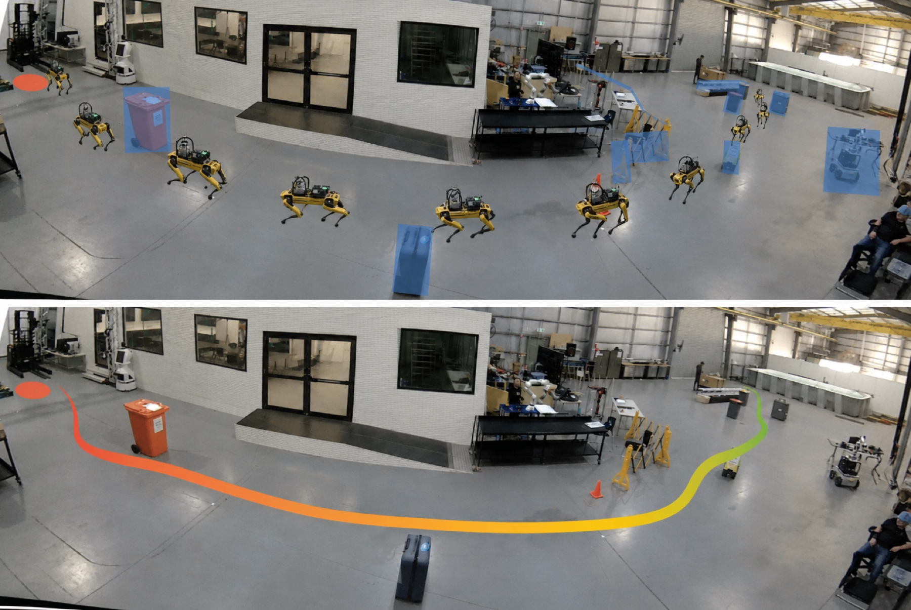
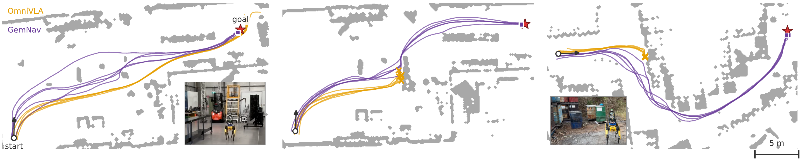
Warehouse, clear then blocked aisle: GemNav (left) vs. OmniVLA (right)
Chemical Yard: GemNav (left) vs. OmniVLA (right)
| Difficulty | Setting | Image | 2D Pose | Image + 2D Pose | |||
|---|---|---|---|---|---|---|---|
| OmniVLA | GemNav | OmniVLA | GemNav | OmniVLA | GemNav | ||
| Easy | Open Approach (A) | 1.77±0.07 | 0.41±0.05 | 0.32±0.07 | 0.43±0.04 | 0.22±0.09 | 0.42±0.06 |
| Open Approach (B) | 1.13±0.28 | 0.20±0.05 | 0.48±0.06 | 0.39±0.02 | 0.91±0.22 | 0.42±0.04 | |
| Medium | Detour Course (90°) | – | – | 3.23±1.98 | 0.42±0.02 | 5.13±0.10 | 0.40±0.03 |
| Warehouse (clear) | – | – | – | – | 0.51±0.07 | 0.46±0.03 | |
| Hard | Warehouse (blocked) | – | – | – | – | 15.46±0.12 | 0.44±0.03 |
| Chemical Yard | – | – | 15.89±0.30 | 0.44±0.03 | 16.54±0.02 | 0.49±0.02 | |
Deployed on irregular bushland with dense vegetation and trees, ANYmal reaches the goal in all seven uninterrupted trials (0.44 ± 0.07 m) and Spot in both uninterrupted trials (≈0.43 m). With a 2D pose goal, the unseen WAVE ROVER stops at the goal in two of three trials (0.33 and 0.51 m), and passes within 0.88 m of it in the third.
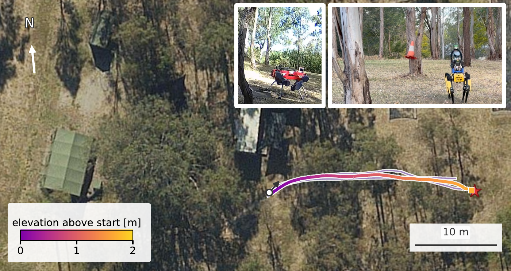
Spot, ANYmal and WAVE ROVER on natural terrain
When there are several feasible paths, such as passing an obstacle on the left or the right, a continuous regression head tends to average them into a straight line through the obstacle. We compare against a matched L1 regression head with the same backbone, LoRA configuration, data, and training. On the Detour Course, GemNav passes the obstacle line and stops at the goal in 10/10 trials (0.48 ± 0.07 m). The L1 head drives into the obstacle in all 10 trials, and OmniVLA (continuous head, L2 loss) behaves similarly, with a closest approach of 3.10 ± 0.09 m.
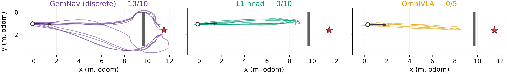
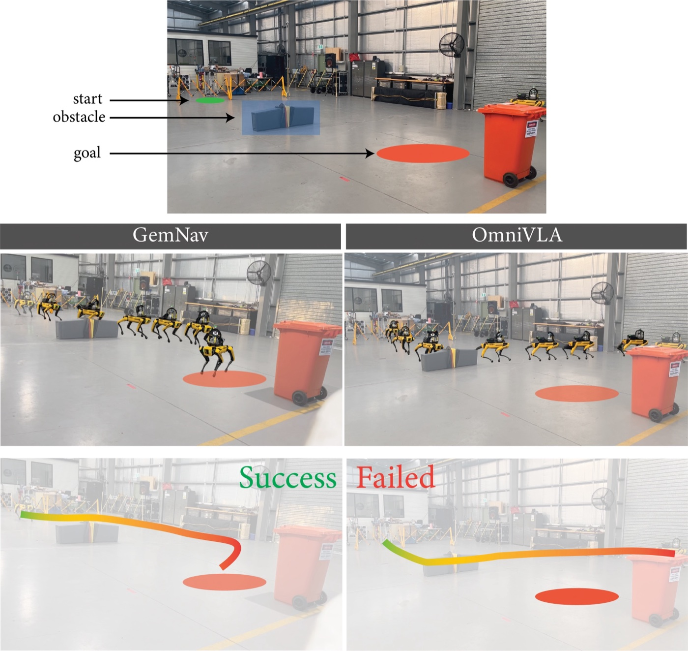
Detour Course, onboard view
We compare eight predicted waypoints against recorded trajectories on held-out SCAND and on two unseen datasets, TokenWalker and WildCross[1] (off-road). GemNav has the lowest ADE/FDE across all datasets and goal modalities.
SCAND (in-distribution)
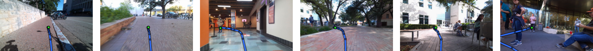
TokenWalker (unseen)
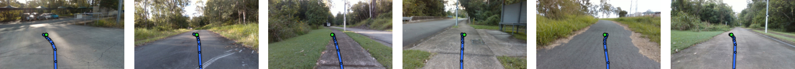
WildCross (unseen, off-road)
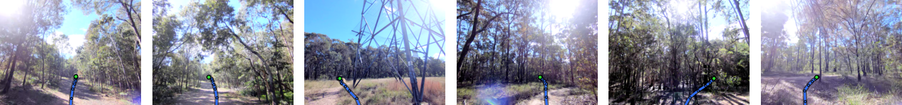
GemNav's predicted eight-waypoint paths drawn on camera frames from each dataset.
GemNav predictions on a WildCross forest sequence, with the goal 8 m ahead. The policy was never trained on off-road data.
| Model | Image | 2D Pose | Image + 2D Pose |
|---|---|---|---|
| SCAND (in-distribution) | |||
| GNM | 2.83 / 5.48 | – | – |
| ViNT | 2.89 / 5.56 | – | – |
| NoMaD | 2.58 / 4.61 | – | – |
| OmniVLA | 2.55 / 4.63 | 2.56 / 4.70 | 2.53 / 4.64 |
| GemNav | 0.76 / 1.20 | 0.37 / 0.18 | 0.33 / 0.19 |
| TokenWalker | |||
| GNM | 2.68 / 5.22 | – | – |
| ViNT | 2.71 / 5.21 | – | – |
| NoMaD | 2.40 / 4.31 | – | – |
| OmniVLA | 2.63 / 4.77 | 2.76 / 4.93 | 2.54 / 4.60 |
| GemNav | 2.09 / 3.64 | 0.78 / 0.19 | 0.75 / 0.19 |
| WildCross (off-road) | |||
| GNM | 2.80 / 5.35 | – | – |
| ViNT | 2.78 / 5.29 | – | – |
| NoMaD | 2.41 / 4.32 | – | – |
| OmniVLA | 2.95 / 5.36 | 2.76 / 4.98 | 2.67 / 4.81 |
| GemNav | 1.81 / 3.17 | 0.50 / 0.18 | 0.39 / 0.18 |
[1] J. Knights, J. Reid, K. Roy, D. Hall, M. Cox, P. Moghadam. WildCross: A Cross-Modal Large Scale Benchmark for Place Recognition and Metric Depth Estimation in Natural Environments. IEEE ICRA, 2026.
@article{bohm2026gemnav,
author = {B{\"o}hm, Peter and Rahman, Saimunur and Khamis, Abdelwahed and Shrestha, Sagun Man Singh and McCool, Chris and Moghadam, Peyman},
title = {{GemNav}: Discrete-Token Visual Robot Navigation using a Multimodal Large Language Model},
journal = {arXiv preprint arXiv:2607.06882},
year = {2026},
}